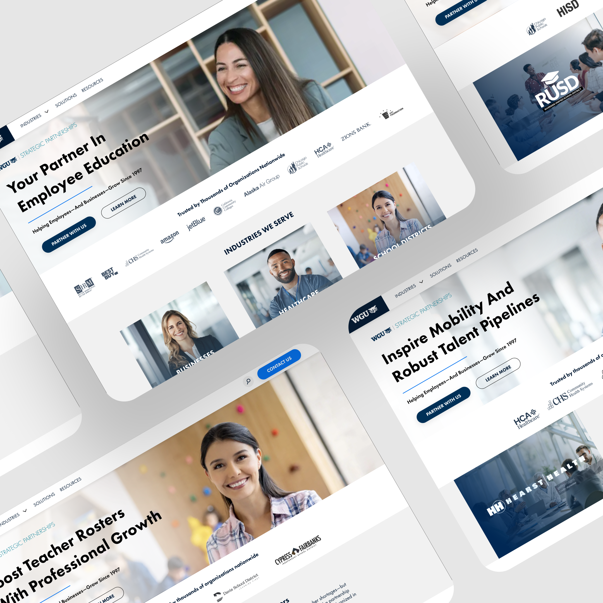
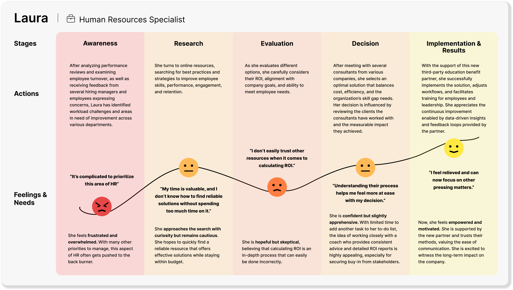
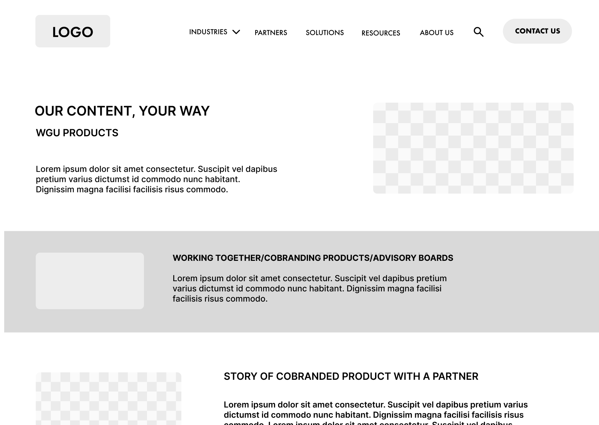
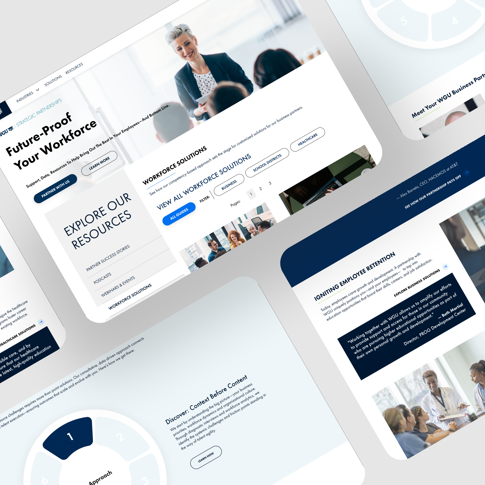
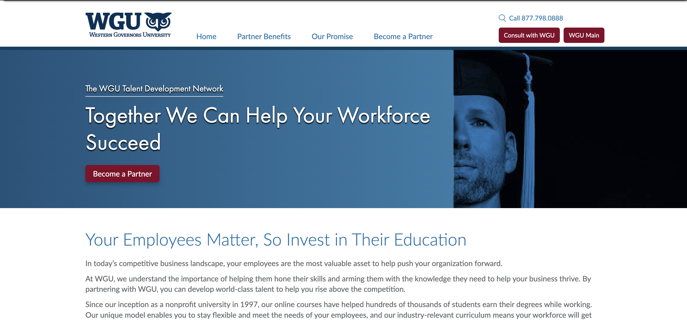
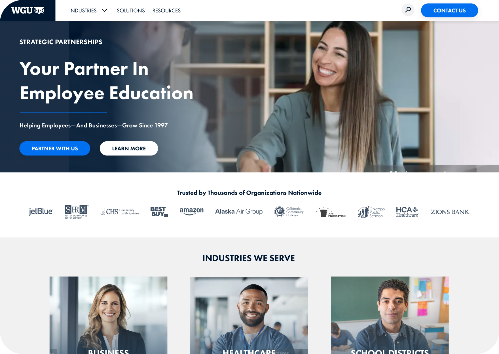

WGU Strategic
Partnerships
Redesign
Redesigning WGU's partner-facing digital experience to eliminate audience confusion, surface ROI evidence before the sales call, and convert three distinct partner types — employers, workforce boards, and community colleges — through tailored, structured journeys.

Desktop view of the new audience-routed entry experience with partner-specific messaging and ROI evidence surfaced before the CTA.
A strong product buried inside
a confusing experience
WGU Workforce Solutions offered genuine value for employers, workforce boards, and community colleges. The UX failed to communicate it. Different audiences arrived at the same page and left without understanding what partnerships included, how employees benefited, or how to take the next step.
Every partner type landed on the same undifferentiated page, faced the same generic content, and hit the same dead-end "Contact Us" button with nothing to justify the inquiry. The gap between WGU's actual product and what partners could perceive online was significant — and costing qualified leads at every stage.
"When a prospective partner asks, 'What do you offer?' — we don't have a consistent answer. Our website shows one thing, our marketing materials say another, and depending on who is pitching, the answer could vary wildly."
— Internal Stakeholder Discovery, WGU Strategic PartnershipsThree distinct failure modes were compounding to suppress partner conversion:
Three partner types,
three distinct journeys
Before designing anything, I needed to understand why partners were landing and leaving without converting. Research spanned three intersecting tracks — each surfacing a different layer of the problem.

Partner journey maps, stakeholder interview synthesis, and competitive benchmarking across Guild Education, Bright Horizons, and Workforce Edge.
- HR and L&D decision-makers at corporate partners
- Academic leads at community college articulation teams
- Program officers at government workforce boards
- Internal WGU sales and partnership teams
- Benchmarked Guild Education, Bright Horizons, Workforce Edge
- Identified where competitors clearly structured partner value
- Spotted gaps: no outcome data, no partner-specific routing
- Captured visual and content differentiation opportunities
- 41% of employees leave due to lack of career development
- Avg. replacement cost per frontline worker exceeds $1,500
- 78% of HR leaders cannot differentiate workforce education vendors
- High bounce rates on all Workforce Solutions landing pages
Partners arrived needing a business case — not a product pitch. The redesign had to surface ROI data and outcomes before any sales interaction.
Five phases across
16 weeks

Partner routing flow and IA structure stress-tested in wireframe before committing to visual design. Each partner journey reviewed 3–5 rounds internally before moving to high fidelity.
- Stakeholder interviews
- Analytics review
- Competitive benchmarking
- Audience mapping
- Partner-group synthesis
- Journey mapping
- Content audit
- Pain point prioritisation
- IA restructure
- Partner routing logic
- Content strategy
- Design principles
- Wireframes
- Component library
- Hi-fidelity screens
- Responsive specs
- Prototype testing
- Stakeholder review
- Usability scoring
- Iteration
- Three audience types needed fundamentally different experiences without requiring three separate builds
- Strong ROI data existed in sales decks and PDFs — invisible to any digital visitor
- B2B decision cycles are long — the experience had to support return visitors building internal business cases over weeks
- Corporate, academic, and workforce board teams each had different priorities for how the product should be presented
- Built a shared component system with partner-specific content modules — routing logic at entry determined which appeared
- Ran a content audit alongside competitive analysis and mapped existing evidence to the moments partners needed it most
- Designed for progressive commitment: first visit builds credibility, second delivers the ROI case, third triggers the inquiry
- Used research synthesis to establish a shared problem definition before design — one artefact aligned what meetings could not
Three features built for
the partner decision journey

Audience selector, employer journey, partnership tier comparison, and ROI evidence modules across desktop and mobile breakpoints.
How success
is measured
Success metrics were defined upfront and tied directly to the three core redesign goals: improving partner inquiry quality, increasing task completion and clarity, and reducing early bounce. Results were measured through prototype testing and usability scoring rounds against the original experience.

One undifferentiated page for all partner types with no routing, no tier structure, and a generic Contact Us button.

Audience selector, tailored journeys, structured tiers, and ROI evidence surfaced before every CTA.
- One undifferentiated page for employers, colleges, and workforce boards
- No tier structure — partners could not determine what was included or how packages differed
- A generic Contact Us button with no supporting evidence or next-step guidance
- ROI data and outcome metrics hidden in sales decks — invisible to digital visitors
- High bounce rates across all Workforce Solutions landing pages
- Audience selector routes each partner to a tailored journey with relevant evidence and CTAs
- Named tiers with scannable feature sets, outcome data, and pricing context visible before contact
- ROI data, retention metrics, and a guided inquiry flow that prepares the partner for the first call
- Industry pathway pages letting partners self-identify by workforce need before exploring programs
- 4.2× increase in qualified partner inquiries during prototype testing
What I'd do
differently
The clearest challenge in this project was serving three fundamentally different audiences within a single platform without fragmenting the experience or tripling the maintenance burden. The routing logic and shared component system was the right architectural answer — but it required careful discipline. Every content module had to work across partner contexts before we could justify building partner-specific variants on top.
If I were starting again, I would run the content audit in week one, not week six. Discovering that strong ROI data — retention figures, replacement cost savings, employee outcome metrics — already existed in internal sales decks midway through design cost a week of unnecessary stakeholder back-and-forth. That data was the single most valuable design input in the entire project. Finding it earlier would have sharpened the information architecture from the first wireframe.
The other lesson: involve partner representatives in the Define phase, not just Research. Their input on the routing logic and tier naming would have sharpened both much earlier in the process. Research-phase-only involvement meant some Define-phase decisions had to be relitigated once real partners reviewed the wireframes — adding unnecessary revision rounds that could have been avoided entirely.